How to play:
1. Joining a gang
While you can still wreak havok and print money without a gang, it's no fun to be alone.
The first thing you should do is either create your own gang with /CreateGang [GangName] or have a friend
who's already in a gang invite you with /InviteToGang [Your Name]. You can accept the invitation with /JoinGang
You can see who's a part of your gang with /Gang
2. Building your base
Once you're part of a gang, you'll want to make a base. This is to create a safe place to print money and participate in other illicit activities. However, you must wait for a Build phase to build.
Build Phase
Build or repair your base. You won't be allowed to kill people during this phase.
Fight Phase
Destroy bricks and damage others. Your goal is to destroy their printers and other items to get money, power, and resources.
Both of these phases are displayed at the bottom of your screen
Make sure you pick a secluded area where people won't find you and camoflague your base as much as you can. Use special barricade bricks (found in the "Base Raiders" brick tab) which have more armor than normal bricks and can take more damage. Armor is displayed as the name of the brick in the brick menu.
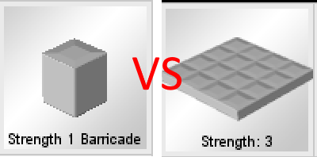
Painting barracades is also allowed so use that to your advantage. Barracades have health based on their armor which can be viewed in the bottom print while looking at a specific barracade. Use the printer to heal barracades.
Another useful feature is the /MakeDoor [Open Time in milliseconds] command which changes any brick you're looking at into a door. This door will only be able to be opened by your gang.
3. Making Machines
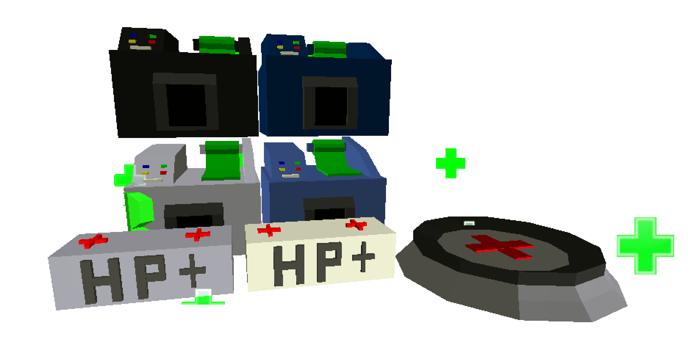
Once you have a strong base (or whatever you could afford) it's best to fill it with machines. These are special bricks that cost quite a bit of money but provide a worthwhile service
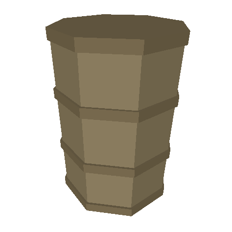
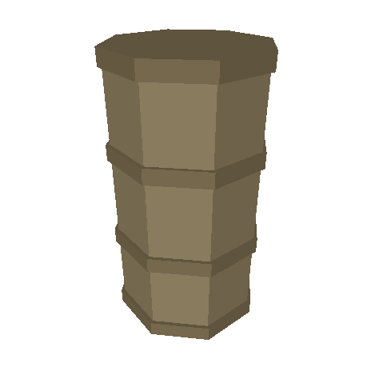
Barrels
Power: None
Wrench a barrel and set an item. The barrel will slowly fill with items at a discount from their normal price. Clicking a barrel will extract its items. Using /Put will put an item of the same type back in.
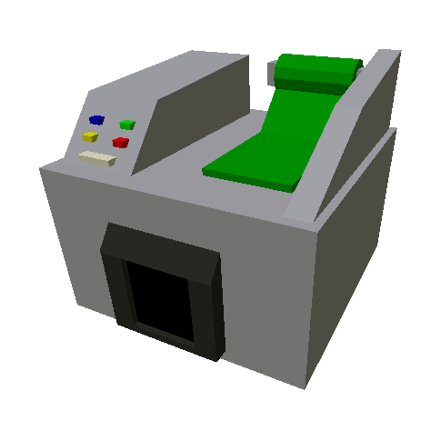
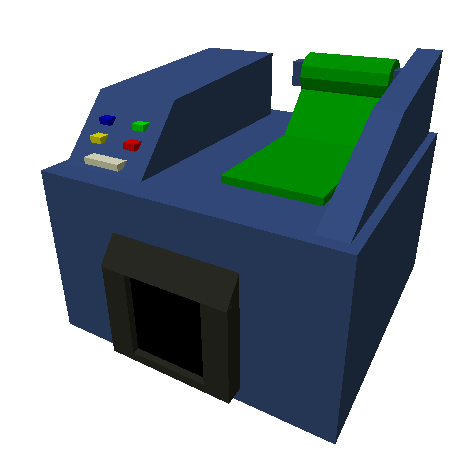
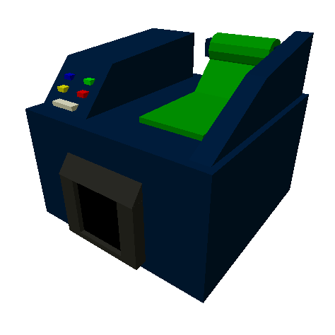
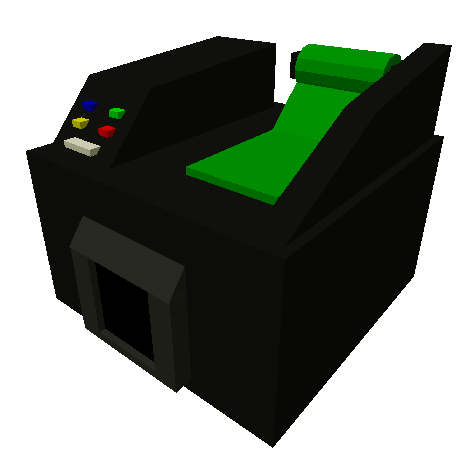
Printers
Power: Yes except for the manual printer
Printers print money at varying speeds and require power. This is your main source of income aside from killing and raiding other players.

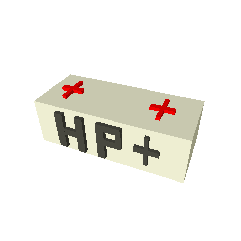
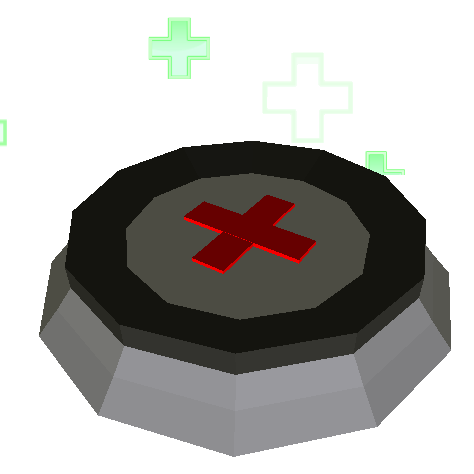
Health
Power: Yes except for the cheapest health box
Health boxes provide healing on a click, though only the electrified one recharges. Health pads provide an area of effect heal from its stored health
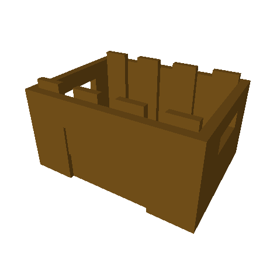
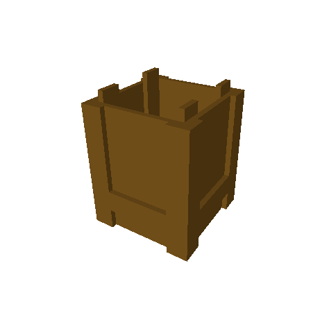
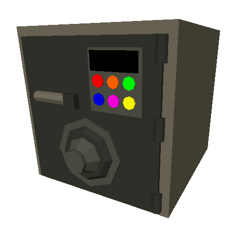
Storage
Power: None
Items can be stored for safe keeping in storage crates, which vary in the amount of items they hold. A Gang Vault is different and only stores money.
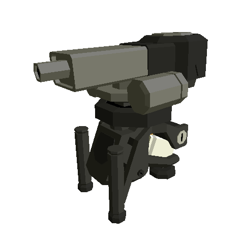
Defense
Power: None
Turrets must be bought in the wrench menu. Placing a turret will defend your base from intruders not in your gang.
4. Raiding
After you're all setup and have some resources, it's time to do some raiding. A varied set of weapons is the best way to make sure you are successful in breaching a base without dying and losing your expensive weapons.
Melee Weapons
Melee weapons are the best way to take down a barracade. They're quick, deal a lot of damage, and cut through level 1 barracades like butter.
Guns
Carry one of these to defend yourself while trying to take down another persons base.
C4
C4 deals area of effect damage to barracades. Use this to cut through tons of barracades quickly and effectively. This is the easiest way to get into a base but also the most costly.
Once inside the base, you can smash money printers to get d0$h and free up city power. Or you could load up on items from your enemy's barrels.